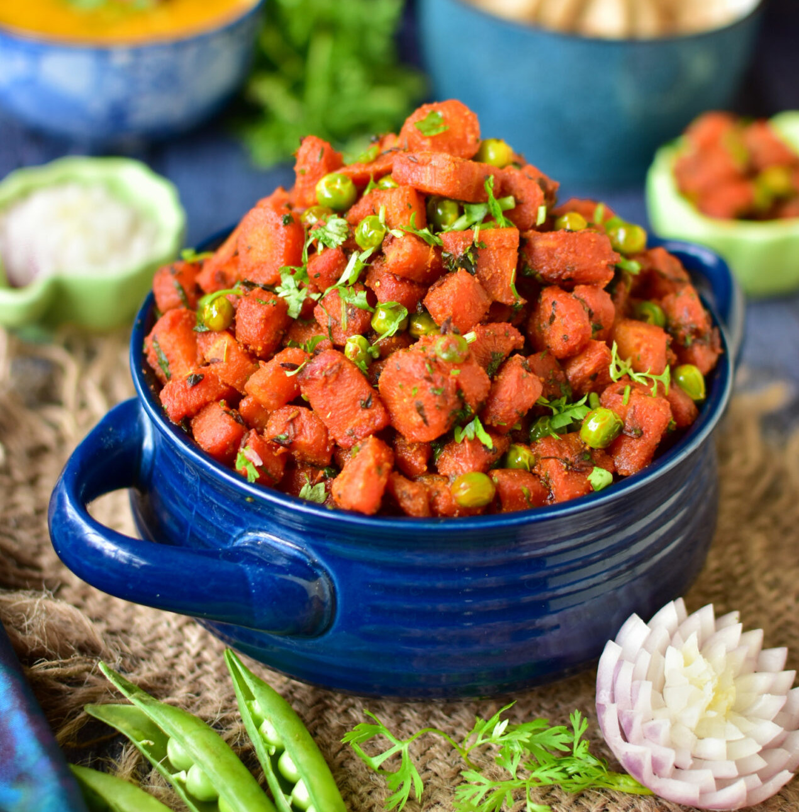

Gajar Matar Recipe
Description
A simple Indian stir-fry made with winter carrots and green peas. This gajar matar sabzi was a staple in my house growing up. Serve it with simple roti and dal for a satisfying meal.
Ingredients
- Carrots
- Green Peas
- Garlic and ginger
- Sugar
- Spices and seasonings
- Lasagna noodles
Steps
- Heat mustard oil on medium-high heat in a pan until it's really hot (this is important to get rid of the raw smell of mustard oil). Lower the heat and add cumin seeds and hing, let the cumin seeds sizzle and then add green chili, chopped garlic and ginger and cook for 1 minute.
- Add the diced carrots and peas (frozen peas which were soaked in warm water for 10 minutes and then drained) and stir well.
- Add the turmeric powder, coriander powder, salt, along with 2 tablespoons water and mix well.
- Cover and cook until the veggies are cooked through on medium heat. It took 6 to 7 minutes here since carrots were super fresh. It might take more time depending on the variety and freshness of carrots.
You might also need to add more water as needed